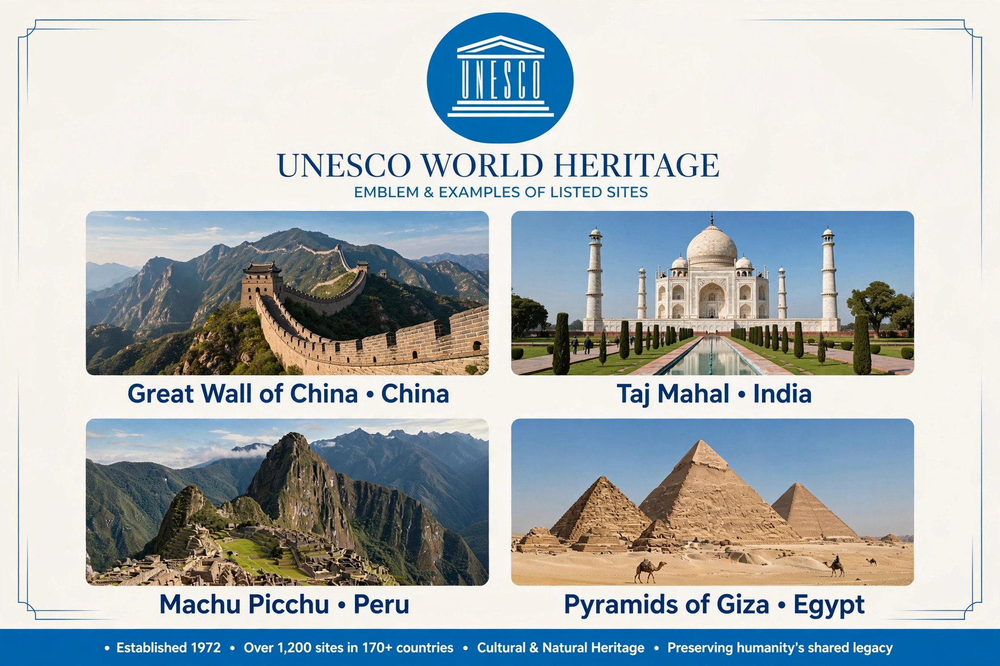

| World Heritage Site | |
|---|---|
| Administered by | UNESCO World Heritage Committee |
| Convention | 1972 |
| Total sites | Over 1,200 (as of mid-2020s) |
| Types | Cultural, Natural, Mixed |
A World Heritage Site is a landmark or area with legal protection by an international convention administered by UNESCO. Sites are designated as having cultural, historical, scientific or other significance, and are considered to be of outstanding value to humanity.

The programme was founded by the Convention Concerning the Protection of the World's Cultural and Natural Heritage, adopted by UNESCO in 1972 and effective from 1975. The first sites were inscribed in 1978.
To be included, a site must be of outstanding universal value and meet at least one of ten criteria, six cultural and four natural. Criteria include representing a masterpiece of human creative genius, exhibiting an important interchange of human values, containing superlative natural phenomena, or containing the most important natural habitats for conservation of biological diversity.
Countries that have signed the convention may submit a tentative list. The World Heritage Committee, advised by ICOMOS for cultural sites and IUCN for natural sites, decides annually on inscriptions. States Parties undertake to protect listed sites.
Sites facing serious threats may be placed on the List of World Heritage in Danger. Delisting is rare; examples include the Arabian Oryx Sanctuary in Oman, the Dresden Elbe Valley in Germany, and Liverpool – Maritime Mercantile City in the United Kingdom.
Categories: UNESCO, World Heritage Sites, Conservation